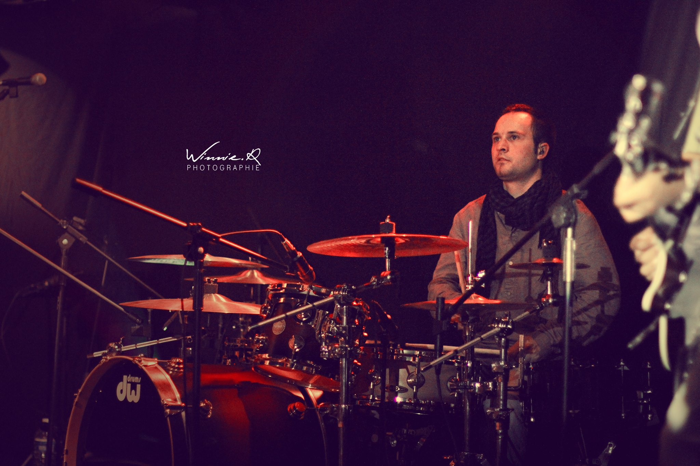

"Batteur" depuis presque toujours, Etienne est régulièrement sollicité pour accompagner des artistes en Live.Il est apprécié pour sa sensibilité et sa capacité d'adaptation.Musicien moderne, il exploite aisément les machines et les technologies actuelles au service de la musique Live.Il est aujourd'hui ambassadeur des marques:
